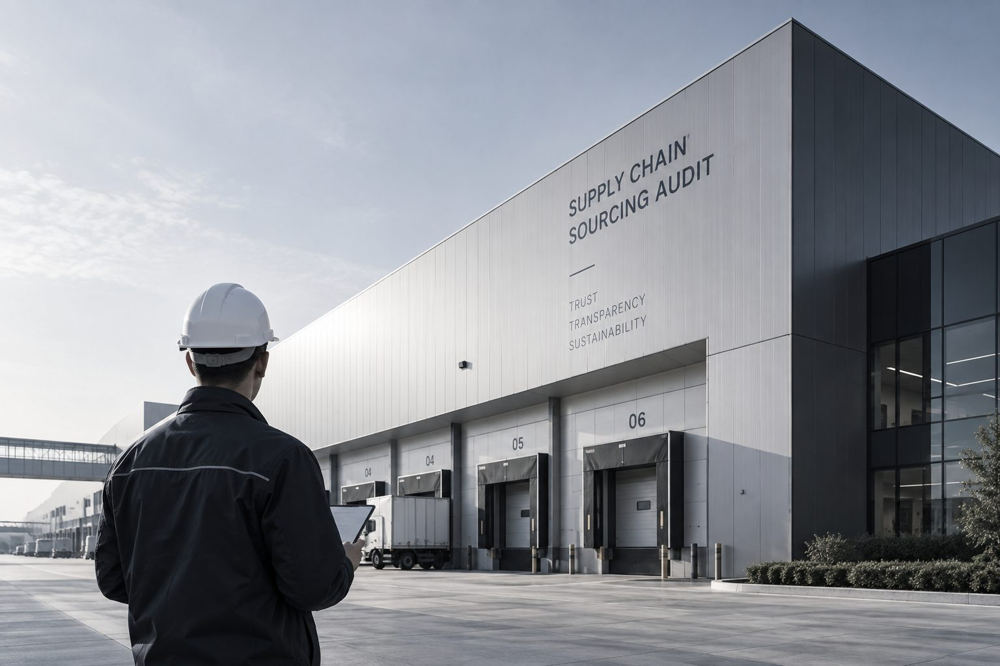

佑信咨询（Resolve）由一支专业调查师团队组成，专注为集团公司、金融投资机构与律师事务所，提供商业调查与尽职调查服务。Resolve is a team of professional investigators serving corporations, financial investors and law firms with corporate investigation and due diligence.
佑信咨询团队背景涵盖前记者、研究员、分析师、调查师与数据专家；加入佑信前，部分成员从事的行业还包括品牌保护专员、打假人员、律师等。我们的核心成员均拥有超过10年的工作经验，并在中国十几个省份及全球多个国家开展过商业调查行动。Our team's backgrounds span former journalists, researchers, analysts, investigators and data specialists — with some members having worked as brand-protection specialists, anti-counterfeiting investigators or lawyers before joining Resolve. Core members bring more than a decade of experience, having conducted investigations across more than a dozen Chinese provinces and a number of countries worldwide.
部分核心成员曾在全球顶尖背调与咨询机构担任高层，对供应商背调、反舞弊调查的规范与标准有深刻理解；也有成员曾就职于知名管理咨询公司、会计师事务所与政府职能部门，为管理层尽调、行业研究提供专业分析视角。Some senior members previously held leadership roles at top-tier background-check and consulting firms, bringing deep expertise in supplier checks and anti-fraud investigation; others came from leading management consultancies, accounting firms and government bodies, contributing an analytical lens to management due diligence and industry research.

公开资料只是起点，而非终点。我们更依赖实地走访、访谈与多渠道核实，去获得经得起推敲的一手信息。Public records are a starting point, not an endpoint. We rely on site visits, interviews and cross-checked sources to reach information that holds up to scrutiny.

严格遵守《网络安全法》《个人信息保护法》《国家安全法》等法律法规，持有涉外调查许可证，必要时咨询外部法律团队进一步判断。We strictly follow China's Cybersecurity Law, Personal Information Protection Law and National Security Law, hold a Foreign-Related Investigation License, and consult external legal counsel when needed.
调查过程向委托方开放，客户可随时跟访、随时与项目经理沟通——这既是对信息真实性的确认，也是对项目进度的共同掌握。The process stays open to the client, who can sit in on interviews and reach the project manager at any time — which both confirms the information is genuine and keeps client and team aligned on progress.
每份报告需经过2位经理、1位总监以上人员的校对并核实存疑信息，保证报告内容的真实性与实效性。Every report is reviewed by two managers and at least one director, who verify any questionable findings before delivery — so the report is accurate and actionable.

可将初步需求发送至邮箱，初步沟通后我们将提供更专业的建议。Send us a brief outline of what you need, and we'll follow up with tailored advice once we've had an initial conversation.
无论涉及供应商背调、合规调查，还是投资尽职调查与市场研究，欢迎与我们联系。我们通常会在了解具体背景后，再建议合适的调查方案。Whether the matter involves a supplier check, a compliance investigation, or investment due diligence, we typically propose an approach only once we understand the specifics.

扫码添加，快速沟通Scan to connect instantly